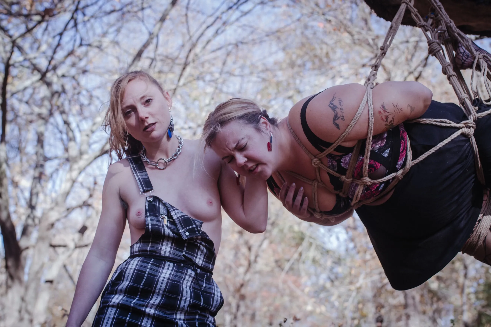
PRESENTER/EVENING PERFORMER
A genderfluid rigger whose dynamic styles keeps Bottoms on their toes. Their current passions are gas masks and body bamboo. Ropeosaur is passionate about teaching concepts and practices rather than patterns and hard rules, particularly with rope. Taking advantage of their ADHD, Ropeosaur brings creativity to their scenes, utilizing their chaotic energy to bring imagination, passion, and playful sadism to any space they share. Outside of kink, Ropeosaur is a full-time healthcare professional with a Master's degree and is a Plant Daddy to their garden. Ropeosaur's home involvement in kink-world includes hosting a private monthly W.T.F (Women/Trans/Femme) Queer Rope Jam where they mentor other Queer Tops in their local community, as well as managing the rope demo stations at RISQUE, DC's monlthy play party. Ropeosaur hopes to inspire others to explore and embrace Topping, regardless of size or gender expression.
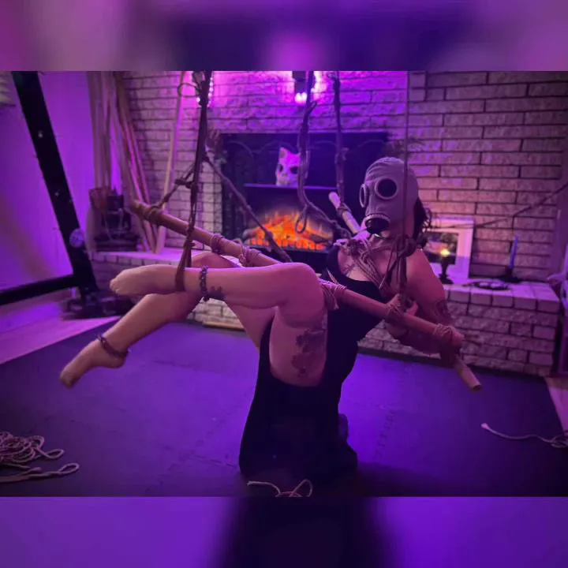
CO-PRESENTER/EVENING PERFORMER
LilServiceGoblin (she/her) has a deep love and passion for all things service - focusing mainly on wine and charcuterie service. When not serving, she is often found in the masochistic ropes of a sadist who enjoys their suffering. Another passion of hers include the wearing of gas masks of all kinds, a craving she indulges in as Creature - the gas mask wearing critter who also loves to serve and suffer.
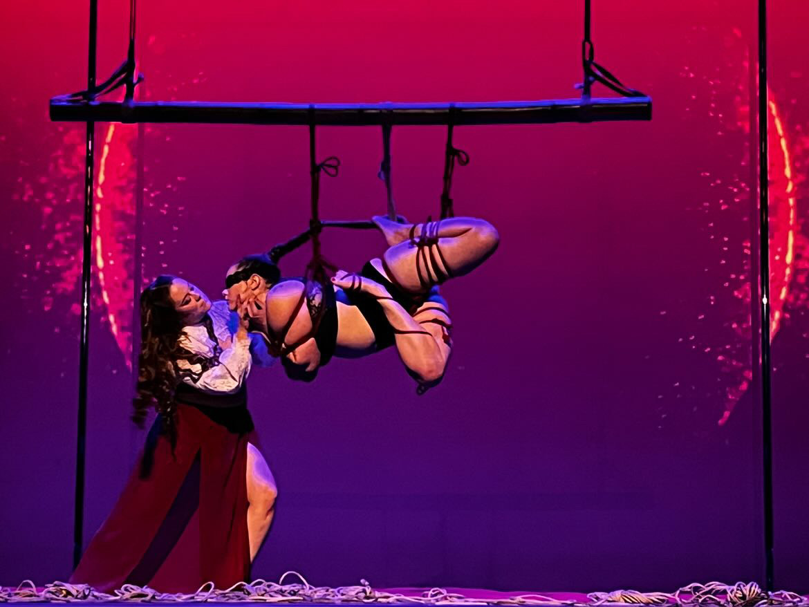
Blue has been practicing the art of Shibari and rope bondage since 2018, working on both sides of the rope as a top, bottom and self-suspender. She believes in the value of in-person and hands-on education and strives to facilitate and promote stringent consent practices in her personal teaching style as well as with anyone she invites to teach in her community. She encourages her students to think outside of the "pattern", using their own creativity and a firm knowledge of construction concepts instead of memorization to produce functional rope bondage. She is extremely inspired by her home base in Asheville, North Carolina, using the unique mountain landscape as a backdrop to her art. You can find her body of work and reach out to her at any time on her Instagram.
Kaiserin Rising is an experienced rope bottom from Asheville, NC. She teaches from a bottom's perspective, particularly focusing on beginner rope students.
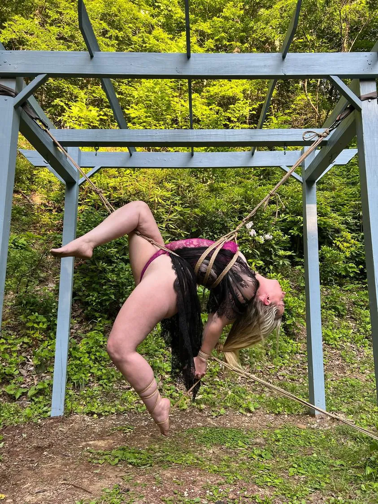
Hi! I'm Cali Chaos (she/her) I have been tying since 2012. I originally got into rope as a top because a house rope top told me I was too heavy to be suspended. My repulsion to being told what I can't do quickly turned into a fascination with all the possibilities around rope. I'm very driven by the creativity and bonds that form while tying. My rope vibe is typically very light hearted, even while being sadistic I'll probably be giggling. With my partner M, we created the group Liminal Rope in Philly back in 2022 to help support a community that creates spaces for all kinds of people to experience rope.
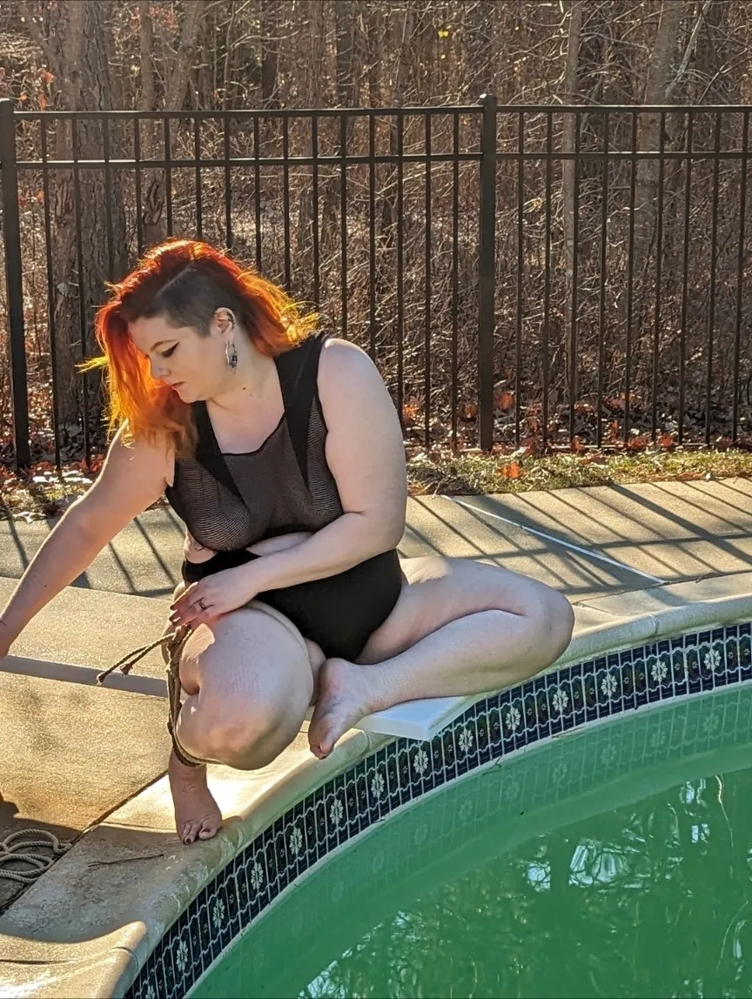
M has been practicing rope bondage for fifteen years, perpetually building a skillset balanced between practicality and artistry. For the past 2 years, M has been cofounder of the Philadelphia-based Liminal Rope with Cali - working together to add to the Philly rope scene's strong tradition of delight and inclusivity with education and performance. While typically a top, M is here to be happily yanked around by the extraordinarily talented Cali.
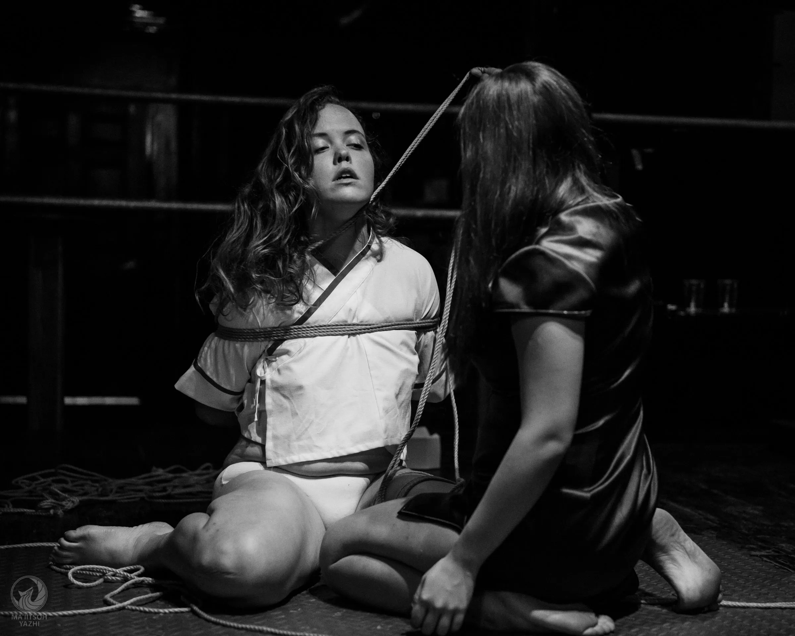
Dani has been involved in the BDSM scene for the last decade and has worn many hats as a student, bottom, munch facilitator, photographer, and event host. She met Winter through her good friend Subay while living abroad in 2015 and had the privilege of performing with them at the first MBE, Manila. They have maintained a friendship over the years and Dani is looking forward to the opportunity to become a vessel for her connection and artistry once again.
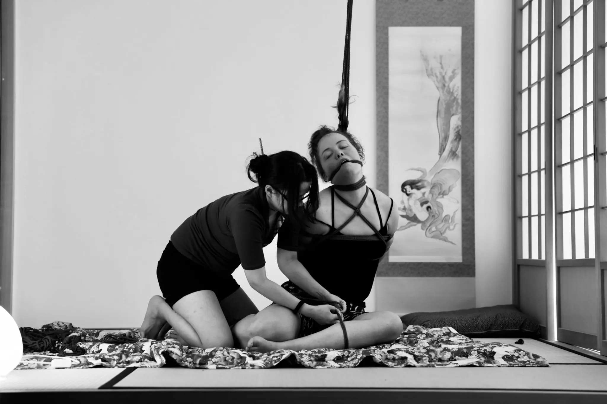
Winter Nawa (they/she) is a community organizer, rope performer, and educator. She was staff at the Morpheus Bondage Extravaganza (MBE), an annual international rope performance event based in Toronto that features worldwide satellite locations. As part of MBE she performed internationally and co-produced the Philippines' stage.Winter Nawa also started the Manila Rope group in the Philippines, helped set up the North Bay Rope lab in California, and recently started the Mac Rope Brunch. These endeavors included organizing munches, creating curriculums and lesson plans, and teaching in group settings.
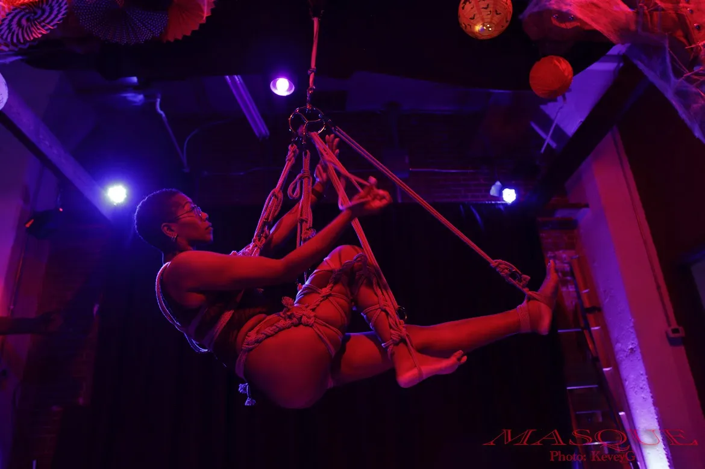
ScorpianaRB is a Rigger, Rope and Fire Switch, polyamorous Philadelphia native, Physical Therapist, Geriatric Specialist, and parent of two superheroes in training. Her work primarily focuses on health, wellness, and rehabilitation of the aging adult. When she’s not grappling with maximizing the functional mobility of the acutely ill geriatric population, she spends her time reading, enjoying all the variety of food Philadelphia has to offer, spending time with friends and partners, and tying people up for fun. She has been active in the local polyamory and kink communities with her focus being on education, inclusivity, diversity, and advocacy for POC. Rope, topping and bottoming, including suspensions is her main kink interest. She enjoys incorporating her training as a Physical Therapist into making rope and kink accessible for all body types and abilities.
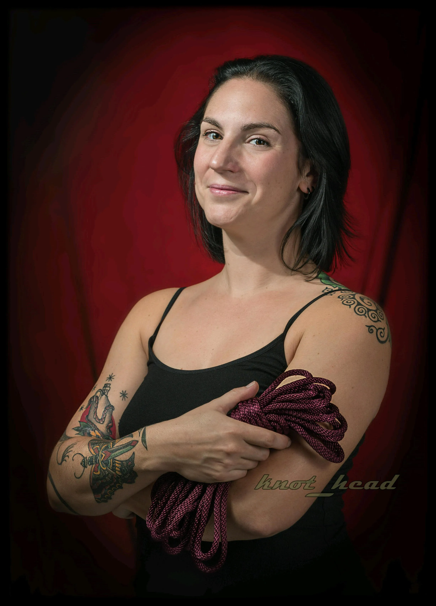
Mina has been an active member of the Philadelphia kink community and the larger rope community for 20 years. She has spent that time as a professional dominatrix, an event organizer, an educator, a mentor, and an active participant. Her primary passion and area of expertise is rope bondage and suspension with nylon rope. She presently organizes the Philadelphia meetings of both Rope Bite and Hitchin Bitches. She has taught classes, presented demos and performed at local events and venues as well as created and hosted her own bi-annual rope unconference. The rope community is home to her and she truly values those who contribute to it and find joy in it, as she does. You can find her on fetlife @Mina_007 or on Instagram @Mina007phl.
Discolady is a rope bottom from Philly who has been practicing rope for about 4 years. A big fan of circus and contorture style ties, she loves the physical and mental challenge of semenawa and adores a juicy partial. For her, rope is a visual and performance art, a meditation on the body, and a mode of alternative intimacy. She loves to share with other bottoms the unique strengths, challenges, preferences, and anatomical aspects of our individual bodies in rope, while uplifting and celebrating what the person being tied contributes to each scene - and the art form as a whole.
Lynn(she/her), identifies as pansexual switch. Lynn has been in the lifestyle for little over 10 years, being more active in her local community since 2017. She is a co-leader of Edge House and Active member of Knighthawks of Virginia. Lynn worked as a Transportation Security Officer under the TSA from 2015 to 2017 when she left TSA to earned her Juris Doctor. She is currently an independent judicial officer and have been in this position for about 3 years. Lynn enjoys contributing to the community by hosting munches, helping with educational, and volunteering as dungeon/play space monitor. She is passionate about promoting safe, consensual, and inclusive space for all.
I have been practicing rope as a bottom for about 10 years, with experience in both suspension and floor work and am passionate about education, especially of people newer to Rope.As a Bottom, I have developed and delivered a number of classes with my partner, both locally and nationally, and have begun instructing on a few topics regarding safety in rope with other local instructors as well as solo. I currently serve on my local Rope Bite board, and have recently become the moderator for my local Rope Bottom group monthly munches. I approach education from the perspective of the bottom, and emphasize the development of the mind-body connection and self-awareness in order to understand what and how to communicate effectively in rope.
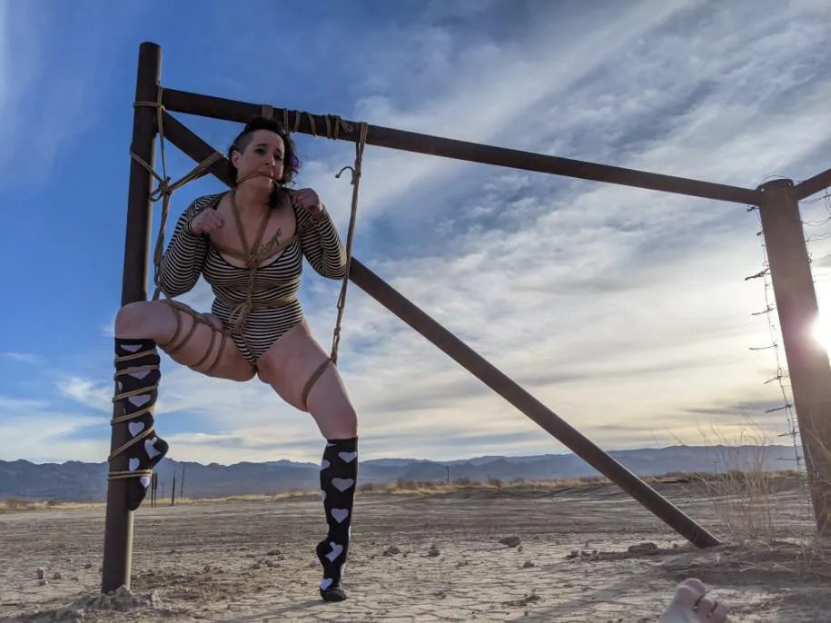
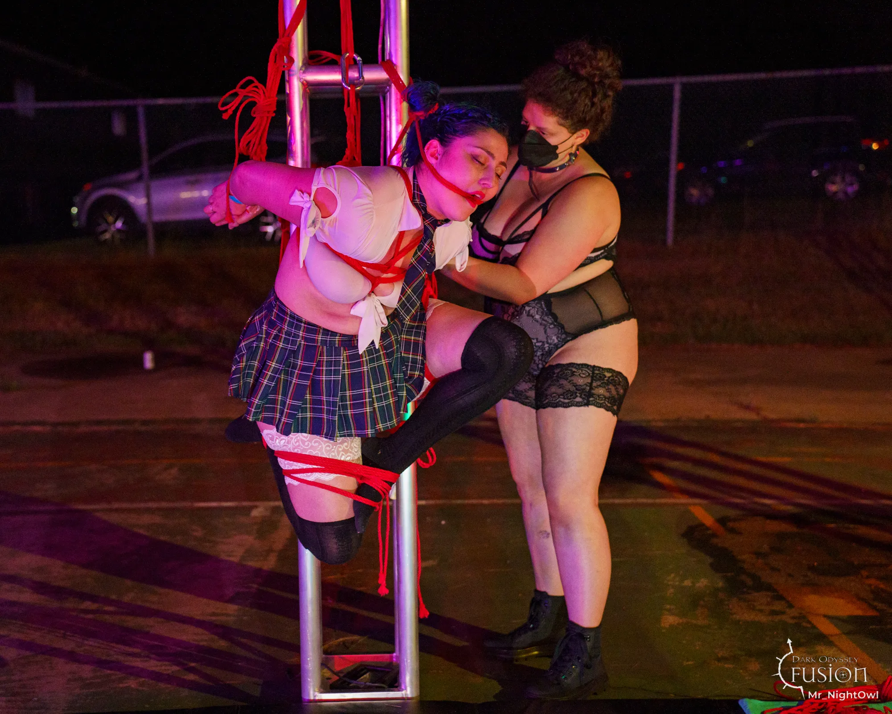
Sassy (sassy_masochist) began her rope journey in 2015, and quickly discovered a love for both topping and bottoming. Over the years, she has had the opportunity to learn many different rope styles from around the world and is always eager for new educational opportunities. She now organizes rope and kink events in New England with the SMart Boston Collaborative. While primarily a rope educator, Sassy’s classes often aim to destigmatize kink and help kinksters make adjustments in their play to accommodate their body’s specific needs. Always looking to improve her skills and develop her own style, Sassy considers herself a lifelong student and is eager to keep teaching and learning from her peers in the future.
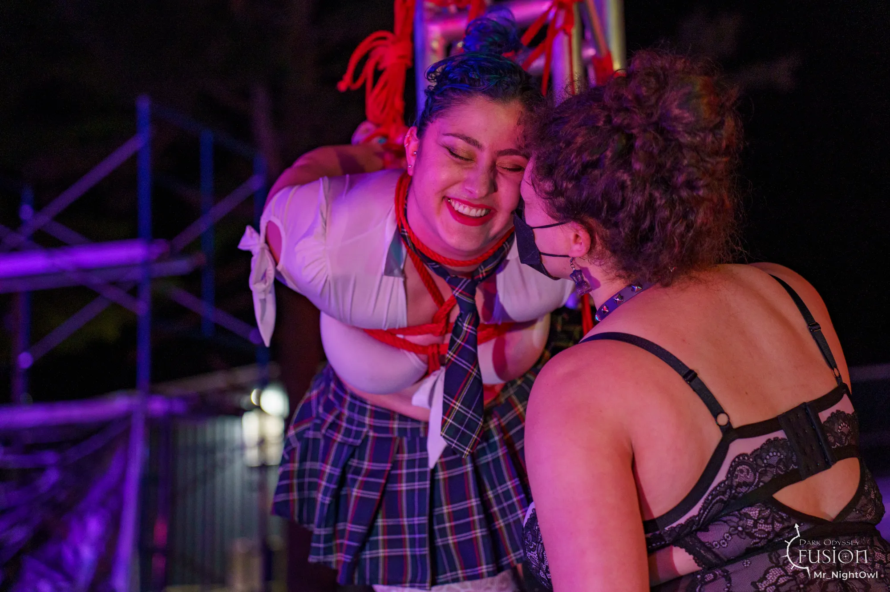
Living up to her name, Tori (FearlesMasochist) has a rope bottoming career starting in 2015, spanning across multiple communities involving diverse and intense sadistic rope styles; most recently expanding into education with several classes across the US and at EURIX. She is a big advocate for community and is a mentor with the New England Mentorship Program and an organizer for SMart Boston Collab. Tori has developed a deep dedication to masochism, from what started as a bedroom spanking fetish and a love of contact sports. Always up for a challenge, she can be seen hanging upside down from a rig somewhere in Boston.